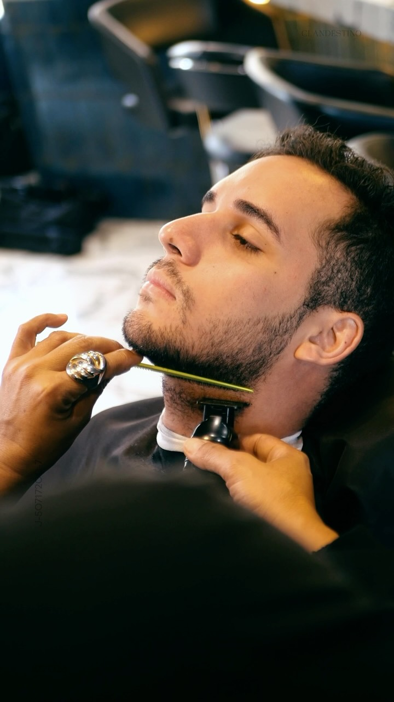

BARBERÍA · BAR · SPA / MARACAIBO
Tu estilo.
Tu ritual.
Un buen corte. Una pausa merecida.
Un lugar al que siempre quieres volver.

01 / EL UNIVERSO CLANDESTINO
Vienes por el corte.
Te quedas por la experiencia.
De la silla a la barra, aquí cada momento tiene su espacio. Barbería, cuidado personal y una buena conversación, en un rincón de Maracaibo hecho para desconectar.
02 / A TU MEDIDA
Elige tu ritual.
Del corte de siempre a ese cambio que tienes en mente. Nosotros cuidamos los detalles.
ASÍ SE VIVE
Esto es Clandestino.
04 / NOS VEMOS EN LA SILLA
Tu próxima pausa
tiene dirección.
C.C. Terraza 77 · Segundo piso
Maracaibo, Estado Zulia, Venezuela.
9:00 a. m. — 6:00 p. m.
9:00 a. m. — 7:00 p. m.
ANTES DE VENIR
¿Cómo reservo mi cita?
Escríbenos por WhatsApp con el servicio y el día que prefieres. El equipo te confirmará disponibilidad. Abrir el chat no confirma una reserva.
¿Qué servicios puedo consultar?
Corte de cabello y barba, lavado, coloración, manicure, pedicure, higiene facial, masajes y depilación. Consulta con el equipo la disponibilidad de cada servicio.
¿Dónde están ubicados?
En el segundo piso del Centro Comercial Terraza 77, Maracaibo. Puedes abrir la ubicación o pedir indicaciones por WhatsApp.